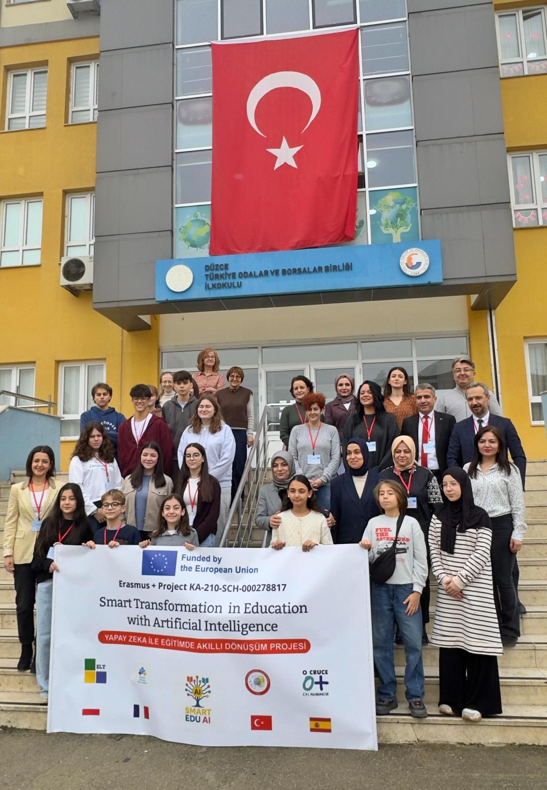
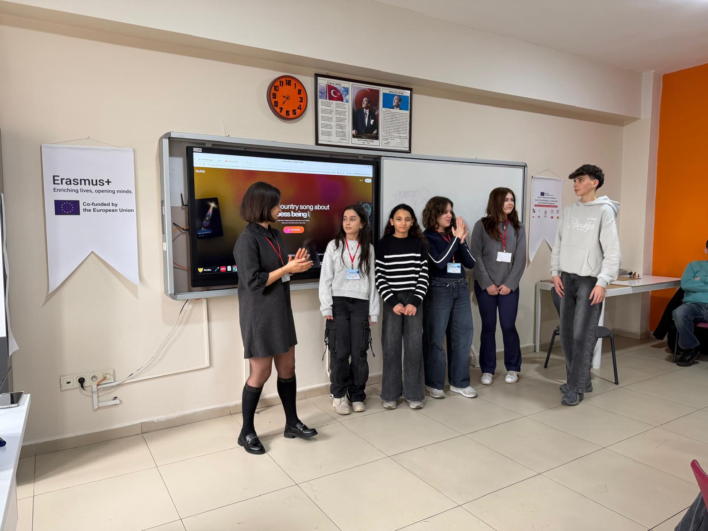

About This Handbook
This handbook addresses a fundamental challenge facing educators today: AI is being deployed in schools faster than educators can evaluate it. Our approach is deliberate –" we prioritise understanding over adoption, critical thinking over enthusiasm, and pedagogical alignment over technological novelty.
Each of the six chapters moves from conceptual foundations to classroom practice. Every resource page includes measurable learning objectives, structured activities, and evidence-based guidance. The result is a reference that treats AI in education as a professional domain requiring informed judgement –" not a toolset requiring only technical skill.
Handbook Chapters

Foundations of AI in Education
Establishes the conceptual vocabulary educators need before evaluating any AI tool. Covers AI, machine learning, NLP, computer vision, generative AI, and data –" distinguishing each from its subsets, and critically examining personalisation claims. Includes structured activities, GDPR fundamentals, and inclusion principles.

AI-Powered Teaching & Learning
Organises AI integration around pedagogical objectives rather than tools. Provides frameworks for designing AI-aligned lessons, facilitating critical AI literacy, fairly assessing AI-assisted work, and using learning analytics as discussion indicators rather than learner labels.

Ethics, Data & Critical Perspectives
Addresses the ethical dimensions that technical guidance invariably omits: bias in AI outputs, privacy obligations under GDPR, the need for transparency and explainability, environmental impact, and the process of building institutional AI policy. Includes classroom-ready discussion scenarios.

Languages & Communication
Covers AI tools for translation, language learning, video subtitling, and educational video creation –" with emphasis on verifying output quality and respecting linguistic diversity. Critical use means never accepting machine translation as authoritative without human review.

Creative AI Projects
Explores AI as a creative partner across four domains: image generation, music composition, 3D design, and science-art fusion. Students learn to prompt, critique, and remix AI outputs –" and to understand copyright, licensing, and representation issues inherent in generative tools.

Professional Development & Project Practice
Supports educators and institutions in building sustainable AI capacity. Covers structured training programmes, instructional design with AI, project management for international partnerships, AI in youth work, evidence-based teaching methods, and data governance frameworks.

All Resources
Every pedagogical resource page linked from the handbook chapters and project activities.
Foundations & Critical Understanding


What is AI and How is it Used in Education?
Defines AI, ML, NLP, CV, and generative AI in education-specific terms. Includes classification exercises and critical evaluation frameworks.

Ethics and Artificial Intelligence in Education
Systematic analysis of bias, privacy, transparency, and fairness in educational AI –" with classroom scenarios and policy guidance.

Essential Measures for Student Data Security
Legal basis, minimisation, transparency, and access rights under GDPR. Practical checklist for tool evaluation and institutional compliance.

Technology is Fundamentally Transforming Education
Examines how digital transformation reshapes pedagogy, assessment, and institutional processes –" with evidence from classroom implementation.
Teaching & Pedagogy


AI Tools Transforming Education: A Practical Guide
Structured approach to evaluating, selecting, and deploying AI tools –" aligned to pedagogical objectives rather than feature lists.

AI-Supported Teaching Methods
Flipped classroom, project-based learning, peer feedback, and reflective practice –" each enhanced by AI with measurable outcomes.

Developing Digital Pedagogy with AI
How AI transforms teaching methodologies and what educators must adapt in their practice to maintain pedagogical integrity.

Integrating AI into Instructional Design
Frameworks for embedding AI into lesson planning, activity design, and assessment creation –" without ceding professional judgement.

AI-Powered Tools for Student Success
Evidence-based strategies for using AI to personalise learning pathways, identify at-risk students, and intervene early.
Professional Development & Youth Work


AI in Education: A 5-Day Training Program
Structured programme for educators and youth workers: foundations, tools, ethics, practice, and action planning. Includes evaluation rubrics.

Empowering Teachers with AI
Professional development models that build teacher confidence and critical awareness –" not just tool proficiency.

Empowering Youth Work with AI and Digital Tools
Strategies for amplifying youth voice, fostering digital citizenship, and supporting social inclusion through AI-enhanced practice.

AI Tools for Youth Work: Enhancing Engagement and Development
Practical tools and methods for youth workers –" covering creative projects, social action, and community engagement with AI.

Project Management Tools: Trello and Slack for Teachers
Collaborative workflows for educational projects: task tracking, communication protocols, and AI-assisted reporting with human oversight.
Languages, Media & Creativity


AI for Translation in Multilingual Classrooms
Capabilities and limitations of AI translation. Strategies for verifying output quality and supporting multilingual communication critically.

Best AI Tools for Learning a Language in 2025
Curated evaluation of AI language tools assessed for pedagogical effectiveness, accessibility, and data practices.

Best AI Tools for Subtitling Videos in 2025
AI subtitling for accessibility compliance and language comprehension –" with accuracy verification protocols.

Best AI Video Creation Tools for Educators in 2025
Generative video tools for student multimedia projects: evaluation criteria, creative applications, and licensing awareness.

AI Image Generation Tools for Education and Creation
Prompting strategies, critical evaluation of outputs, copyright considerations, and structured classroom activities.

AI in Music: Suno, BandLab, Soundraw and Cultural Fusion
AI-assisted music composition with cultural sensitivity –" addressing licensing, representation, and creative ownership.

Transforming Science Education with Digital Innovation
AR/VR simulations, AI-driven experiments, and virtual labs –" with critical analysis of accuracy and limitations.

Unlocking Creativity: AI Image Generation and 3D Design
Students create AI-assisted 3D models and digital designs –" addressing cultural authenticity, bias, and technical skill development.
Downloadable PDF Resources
Presentation materials and training resources from project activities in France and Turkey.
- AI in Education –" 5-Day Training Program (France)
- What is AI and How is it Used in Education? (France)
- Integrating AI into Instructional Design (France)
- AI Image Generation Tools for Education (France)
- AI Tools Transforming Education –" Practical Guide (France)
- Project Management: Trello and Slack (France)
- AI-Powered Tools for Student Success (France)
- Empowering Youth Work with AI (France)
- AI Tools for Youth Work (France)
- Ethics and AI in Education (France)
- Student Data Security and Confidentiality (France)
- Technology Transforming Education (France)
- Empowering Teachers with AI (France)
- Developing Digital Pedagogy with AI (France)
- AI-Supported Teaching Methods (France)
- AI for Translation (France)
- Best AI Tools for Learning a Language 2025 (France)
- Best AI Tools for Subtitling Videos 2025 (France)
- Best AI Video Creation Tools 2025 (France)
- AI in Music –" Suno, BandLab, Soundraw (Turkey)
- Transforming Science Education with Digital Innovation (Turkey)
- Unlocking Creativity: AI Image Generation and 3D Design (Turkey)
Project Activities & Mobilities

France –" 5-Day Training Program
Smart Edu AI: A 5-Day Training Program for Youth Workers, July 21–"25, 2025 in Strasbourg. Activities cover AI fundamentals, pedagogical models, digital pedagogy, project management, and ethics.

Turkey –" Exploring the Art of Science with AI
3-day intensive mobility in Türkiye, February 2–"4. Students and teachers explored AI integration in science education, digital music production, and AI-supported 3D design.